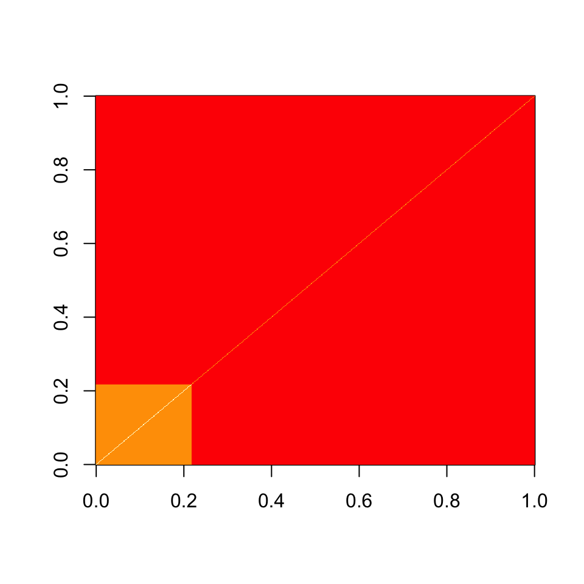

orthus.RmdIf you have not already done so, I would read through the pibble vignette before this one.
Stray can be used for jointly modeling multivariate count data and multivariate Gaussian data. For example, this would be a reasonable model to jointly model 16S microbiome data and metabolomics data jointly. Because of the “two-headed” nature of this model, e.g., two observed data-sets, I named this model orthus (a two-headed dog and brother of Cerberus in Greek Mythology)[https://en.Wikipedia.org/wiki/Orthrus]. The orthus model can be written as
\[ \begin{align} Y_j & \sim \text{Multinomial}\left(\pi_j \right) \\ \pi_j & = \phi^{-1}(\eta_j) \\ \begin{bmatrix}\eta_j \\ Z_j \end{bmatrix} &\sim N(\Lambda X, \Sigma) \\ \Lambda &\sim N(\Theta, \Sigma, \Gamma) \\ \Sigma &\sim W^{-1}(\Xi, \upsilon) \end{align} \]
Note this looks nearly identical to the pibble model but we have appended the second (Gaussian) dataset (\(Z\)) onto \(\eta\). In doing this, the definition of \(\Lambda\) changes (it is now larger with the bottom rows dictating how the covariates \(X\) influence the second dataset). Similarly, \(\Sigma\) now is much larger and can be though of as \[ \Sigma = \begin{bmatrix} \Sigma_{(\eta, \eta)} & \Sigma_{(\eta, Z)} \\ \Sigma_{(Z, \eta)} & \Sigma_{(Z, Z)}\end{bmatrix} \] where \(\Sigma_{(\eta, \eta)}\) describes the covariance between log-ratios (e.g., the covariance among the multinomial categories in log-ratio space), \(\Sigma_{(Z, Z)}\) describes the covariance between the dimensions of \(Z\) (e.g., between metabolites if Z is metabolomics data), and \(\Sigma_{(\eta, Z)} = \Sigma_{(Z, \eta)}^T\) represents the covariance between log-ratios and dimensions of \(Z\) (e.g., between microbial taxa and metabolites). Similar to \(\Sigma\) and \(\Lambda\), the parameters \(\Xi\) and \(\Theta\) undergo a similar expansion to accommodate the second dataset.
To demonstrate orthus I will perform a toy analysis on data from Kashyap et al. (2013) and made available by Callahan et al. (2016) as part of their recently published microbiome data analysis workflow (Callahan et al. 2016). I follow the data preprocessing of Callahan et al. (2016) we just don’t drop taxa but instead amalgamate those that don’t pass filtering to a category called “other”. I do this to maintain the proper variance in the multinomial model.
metab_path <- system.file("extdata/Kashyap2013", "metabolites.csv", package="stray") microbe_path <- system.file("extdata/Kashyap2013", "microbe.rda", package="stray") metab <- read.csv(metab_path, row.names = 1) metab <- as.matrix(metab) microbe <- get(load(microbe_path)) ## Preprocessing ## # Metabolite Preprocessing keep_ix <- rowSums(metab == 0) <= 3 metab <- metab[keep_ix, ] # 16S Preprocesing - plus some weirdness to rename amalgamated category to "other" keep_ix <- taxa_sums(microbe) > 4 keep_ix <- keep_ix & (rowSums(otu_table(microbe)>2)>3) microbe <- merge_taxa(microbe, taxa_names(microbe)[!keep_ix]) nms <- taxa_names(microbe) rnm <- which(taxa_names(microbe)==taxa_names(microbe)[!keep_ix][1]) nms[rnm] <- "other" taxa_names(microbe) <- nms rm(nms, rnm) # bit of preprocessing metab <- log10(1 + metab)
Now I am going to do just a bit of processing to get data into a format for orthus. Note I have no extra metadata so we are just going to use an intercept in our model at this time.
Y <- otu_table(microbe, taxa_are_rows=TRUE) Z <- metab #(metabolites are rows) X <- matrix(1, 1, phyloseq::nsamples(microbe)) # save dims for easy reference N <- ncol(Y) P <- nrow(Z) Q <- nrow(X) D <- nrow(Y)
Now I am going to set up the priors. My priors are going to be similar to that of pibble but now we need to think about a prior for the covariance among the metabolites and between the metabolites and the log-ratios of the taxa. Remember, that priors must be defined in the \(ALR_D\) (e.g., ALR with the reference being the D-th taxa; this may be changed in the future to make specifying priors more user friendly).
I am going to form our prior for \(\Sigma\) by specifying \(\upsilon\) and \(\Xi\). I will specify that I have weak prior belief that the taxa are independent in terms of their log absolute abundance. We can translate this statement about covariance of log absolute abundance into a statement about log-ratio covariance by pre- and post-multiplying by the \(ALR_D\) contrast matrix (which I refer to as \(GG\) below). Additionally, I believe that there is likely no substantial covariance between the taxa and the metabolites and I assume the metabolites are likely independent.
upsilon <- (D-1+P)+10 # weak-ish prior on covariance over joint taxa and metabolites Xi <- diag(D-1+P) GG <- cbind(diag(D-1), -1) Xi[1:(D-1), 1:(D-1)] <- GG%*%diag(D) %*% t(GG) Xi <- Xi * (upsilon-D-P) # this scales Xi to have the proper mean we wanted image(Xi)

Note the structure of this prior, everything is independent but there is a moderate positive covariance between the log-ratios based on their shared definition in terms of the \(D\)-th taxa.
The other parts of the prior are less interesting. We are going to state that our mean for \(\Lambda\) is centered about \(\mathbf{0}\) and that the signal-to-noise ratio in the data is approximately 1 (this later part is specified by \(\Gamma=I\)).
Finally I fit the model.
fit <- orthus(Y, Z, X, Theta=Theta, Gamma=Gamma, Xi=Xi, upsilon=upsilon, n_samples=1000)
Next we are going to transform the log-ratios from \(ALR_D\) to the \(CLR\). I have written all the transformation functions, e.g., to_clr etc… to work on orthusfit objects in a similar manner to how they work on pibblefit objects. For orthusfit objects they only transform the log-ratio components of parameters leaving the other parts of inferred model parameters (i.e., the parts associated with the metabolites) untouched.
There are a ton of ways to visualize the inferred model. I could make network diagrams relating taxa to taxa, taxa to metabolites and metabolites to metabolites. I could look at a low dimensional representation of joint covariance to create something very much akin to canonical correlation analysis (CCA). I could look at how well the metabolites predict the taxa and vice-versa. But for the sake of simplicity I will do something much simpler. Here I am just going to find a list of taxa metabolite covariances that the model is very confident about.
# First just look ath the cross-covariances fit by the model # (covariance between taxa in CLR coordinates and metabolites) # This requires that we extract the corner of Sigma. xcor <- fit$Sigma[1:D, D:(D-1+P),] # Initial preprocessing to speed up computation of posterior intervals # As there are alot of cross-covariance terms we are going to first # weed down the list of things we have to look at by first pass # selecting only those taxa that have a large posterior mean for the covariance xcor.mean <- apply(xcor, c(1,2), mean) to.analyze <- gather_array(xcor.mean, cov, taxa, metabolite) %>% arrange(-abs(cov)) %>% .[1:1000,] %>% mutate(tm =paste0(taxa, "_", metabolite)) # Subset Covariance to those we are interested in and calculate posterior # confidence intervals. xcor.summary <- gather_array(xcor, cov, taxa, metabolite, iter) %>% mutate(tm=paste0(taxa, "_", metabolite)) %>% filter(tm %in% to.analyze$tm) %>% mutate(taxa = rownames(Y)[taxa], metabolite = rownames(Z)[metabolite]) %>% group_by(taxa, metabolite) %>% summarise_posterior(cov) %>% arrange(mean) %>% filter(taxa != 'other') # we don't care about these # Select those covariances where the model has high certainty (95%) that # the true covariance is not zero. xcor.summary %>% filter(sign(p2.5)==sign(p97.5)) %>% filter(abs(mean) > 2) #> # A tibble: 214 x 8 #> # Groups: taxa [17] #> taxa metabolite p2.5 p25 p50 mean p75 p97.5 #> <chr> <chr> <dbl> <dbl> <dbl> <dbl> <dbl> <dbl> #> 1 722 206.0445922 -6.54 -3.92 -3.09 -3.30 -2.39 -1.45 #> 2 7816 206.0445922 -5.38 -3.19 -2.42 -2.66 -1.85 -1.06 #> 3 722 290.9298419 -4.89 -3.09 -2.45 -2.60 -1.88 -1.16 #> 4 18182 380.1846197 -4.87 -3.11 -2.36 -2.52 -1.83 -1.03 #> 5 722 181.4504354 -4.77 -3.03 -2.36 -2.51 -1.83 -1.18 #> 6 722 177.0565368 -4.90 -2.98 -2.34 -2.49 -1.81 -1.10 #> 7 19517 380.1846197 -4.82 -3.02 -2.31 -2.47 -1.74 -0.920 #> 8 2943 380.1846197 -4.69 -2.99 -2.31 -2.46 -1.79 -0.994 #> 9 722 176.0343919 -4.80 -2.97 -2.28 -2.46 -1.80 -1.10 #> 10 722 180.072273 -4.74 -3.00 -2.26 -2.45 -1.70 -1.00 #> # … with 204 more rows
So it looks there there are a few hundred covariances that we can be fairly confident about.
Please note, I performed this analysis to demonstrate the use of orthus which is a model that I have been repeatedly asked for. I think its a cool model and could be quite useful in the right circumstances. But I would like to point out a few philosophical points about the analysis I performed above.
First, I performed this analysis just to demonstrate orthus. I really don’t know the data showcased here. What is metabolite 206.0445922? I have no idea. For some reason this is how the metabolites in that dataset were named. For the same reason I have left the taxa indexed by sequence variant number.
Second (and more important), identifying relationships between taxa and metabolites (or between any two high-dimensional multivariate data-sets) is really difficult! Here we are looking at just 114 taxa and 405 but this leads to 46170 possible covariances and here we only have 12 samples! Yes orthus is a Bayesian model, and Yes, Bayesian models can be quite useful when there are more parameters than samples, but there is a limit of reasonability. Really, Bayesian models are great when you can perfectly capture your prior beliefs with your prior. But how often can that really be done perfectly? As such I would caution users, to use orthus carefully. Consider which metabolites and taxa you really care about and if you can, isolate your analyses to those.
Alright, that’s probably enough philosophizing for an R package Vignette. I hope you enjoy orthus.
Callahan, Ben J, Kris Sankaran, Julia A Fukuyama, Paul J McMurdie, and Susan P Holmes. 2016. “Bioconductor Workflow for Microbiome Data Analysis: From Raw Reads to Community Analyses.” F1000Research 5.
Kashyap, Purna C, Angela Marcobal, Luke K Ursell, Samuel A Smits, Erica D Sonnenburg, Elizabeth K Costello, Steven K Higginbottom, et al. 2013. “Genetically Dictated Change in Host Mucus Carbohydrate Landscape Exerts a Diet-Dependent Effect on the Gut Microbiota.” Proceedings of the National Academy of Sciences 110 (42): 17059–64.